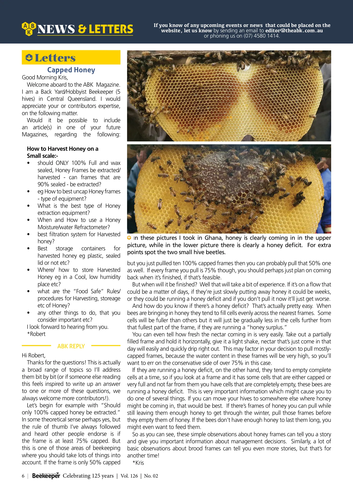

If you know of any upcoming events or news that could be placed on the
website, let us know by sending an email to editor@theabk.com.au
or phoning us on (07) 4580 1414.
NEWS & LETTERS
Letters
Capped Honey
Good Morning Kris,
Welcome aboard to the ABK Magazine.
I am a Back Yard/Hobbyist Beekeeper (5
hives) in Central Queensland. I would
appreciate your or contributors expertise,
on the following matter.
Would it be possible to include
an article(s) in one of your future
Magazines,
regarding
the
following:
How to Harvest Honey on a
Small scale:-
•
should ONLY 100% Full and wax
sealed, Honey Frames be extracted/
harvested - can frames that are
90% sealed - be extracted?
•
eg How to best uncap Honey frames
- type of equipment?
•
What is the best type of Honey
extraction equipment?
•
When and How to use a Honey
Moisture/water Refractometer?
•
best filtration system for Harvested
honey?
•
Best
storage
containers
for
harvested honey eg plastic, sealed
lid or not etc?
•
Where/ how to store Harvested
Honey eg in a Cool, low humidity
place etc?
•
what are the “Food Safe” Rules/
procedures for Harvesting, storeage
etc of Honey?
•
any other things to do, that you
consider important etc?
I look forward to hearing from you.
*Robert
Hi Robert,
Thanks for the questions! This is actually
a broad range of topics so I’ll address
them bit by bit (or if someone else reading
this feels inspired to write up an answer
to one or more of these questions, we
always welcome more contributors!).
Let’s begin for example with “Should
only 100% capped honey be extracted.”
In some theoretical sense perhaps yes, but
the rule of thumb I’ve always followed
and heard other people endorse is if
the frame is at least 75% capped. But
this is one of those areas of beekeeping
where you should take lots of things into
account. If the frame is only 50% capped
ABK REPLY
but you just pullled ten 100% capped frames then you can probably pull that 50% one
as well. If every frame you pull is 75% though, you should perhaps just plan on coming
back when it’s finished, if that’s feasible.
But when will it be finished? Well that will take a bit of experience. If it’s on a flow that
could be a matter of days, if they’re just slowly putting away honey it could be weeks,
or they could be running a honey deficit and if you don’t pull it now it’ll just get worse.
And how do you know if there’s a honey deficit? That’s actually pretty easy. When
bees are bringing in honey they tend to fill cells evenly across the nearest frames. Some
cells will be fuller than others but it will just be gradually less in the cells further from
that fullest part of the frame, if they are running a “honey surplus.”
You can even tell how fresh the nectar coming in is very easily. Take out a partially
filled frame and hold it horizontally, give it a light shake, nectar that’s just come in that
day will easily and quickly drip right out. This may factor in your decision to pull mostly-
capped frames, because the water content in these frames will be very high, so you’ll
want to err on the conservative side of over 75% in this case.
If they are running a honey deficit, on the other hand, they tend to empty complete
cells at a time, so if you look at a frame and it has some cells that are either capped or
very full and not far from them you have cells that are completely empty, these bees are
running a honey deficit. This is very important information which might cause you to
do one of several things. If you can move your hives to somewhere else where honey
might be coming in, that would be best. If there’s frames of honey you can pull while
still leaving them enough honey to get through the winter, pull those frames before
they empty them of honey. If the bees don’t have enough honey to last them long, you
might even want to feed them.
So as you can see, these simple observations about honey frames can tell you a story
and give you important information about management decisions. Similarly, a lot of
basic observations about brood frames can tell you even more stories, but that’s for
another time!
*Kris
In these pictures I took in Ghana, honey is clearly coming in in the upper
picture, while in the lower picture there is clearly a honey deficit. For extra
points spot the two small hive beetles.
6 |
Celebrating 125 years | Vol. 126 | No. 02